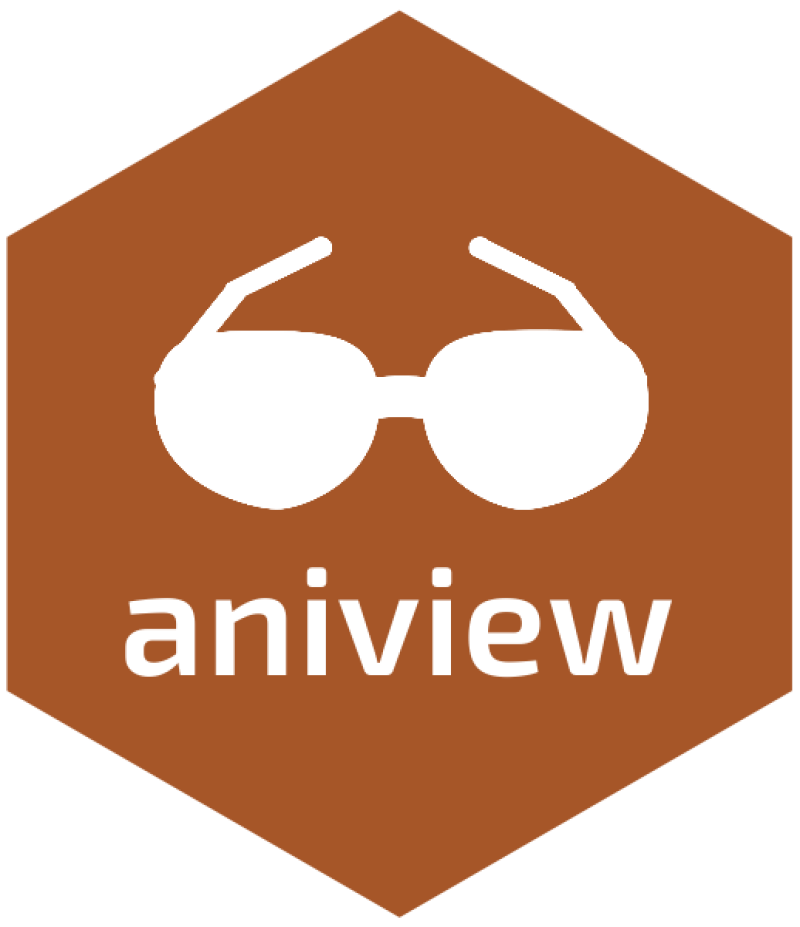

I’m a Data Scientist and R Developer. I build tools and apps to automate data analysis, share insights and improve decision making.
Add a scroll back to top icon to R Markdown and Shiny apps

Meetup organized by adminR, Digital Society Initiative DSI and the Statistical Office of Zürich.
Meetup organized by Geneva R Users at with the support of the EPFL Extension School at Campus Biotech.